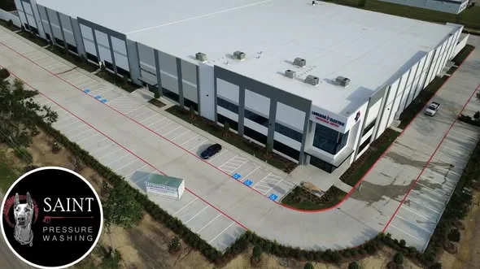
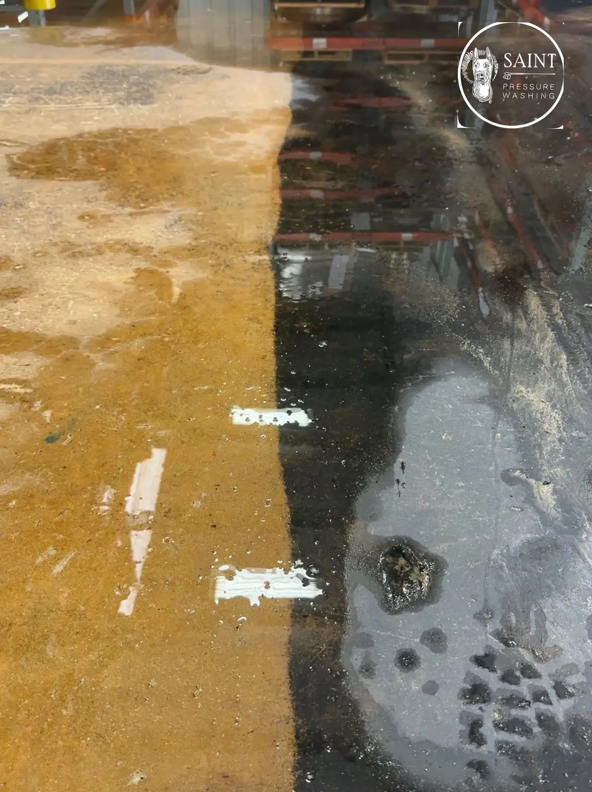
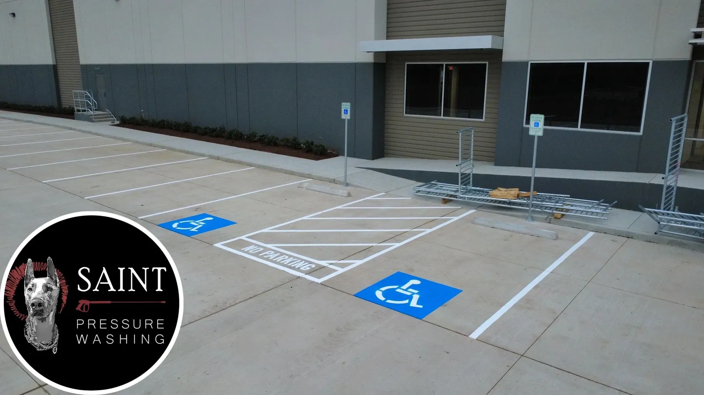
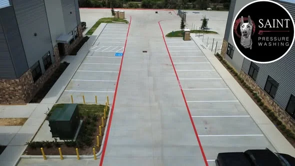
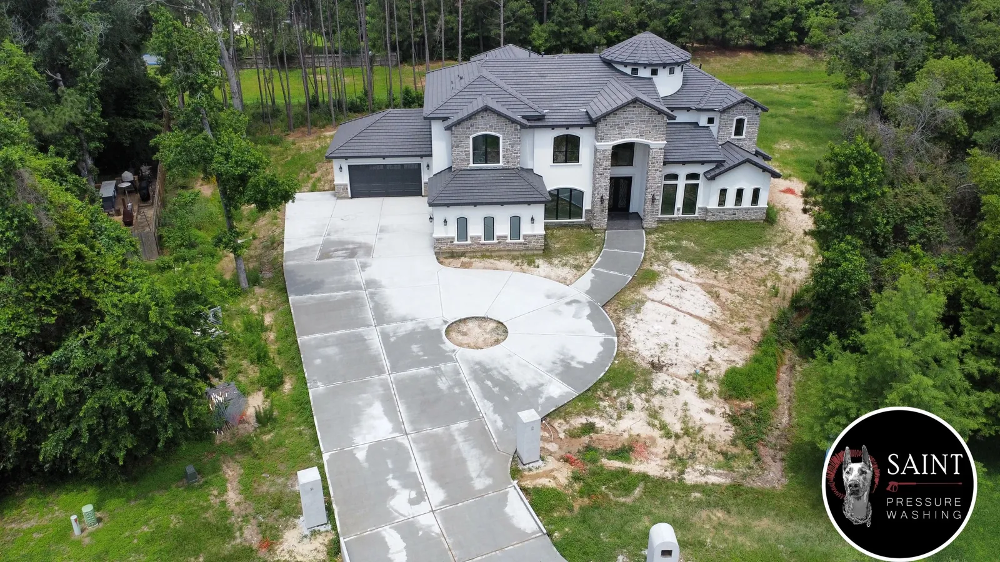

What Saint does.
Four services built around commercial properties — and homeowners who want the same results on their driveway.

Warehouse lot · aerial
Mid-wash · warehouse floorCommercial Pressure Washing
Commercial pressure washing uses specialized high-flow equipment at the right pressure to remove dirt, algae stains and contaminants — keeping a property clean, safe and professional-looking.
- Parking lots, drive lanes & walkways
- Dirt, algae stains & contaminants lifted
- High flow with the right pressure for the surface
- Keeps the property safe and professional

ADA layout · fresh paintParking Lot Striping
Parking lot striping applies clear, durable markings that improve traffic flow, maximize space and keep people safe. Proper striping boosts visibility, supports ADA compliance and keeps a property organized and professional.
- Clear, durable stall & lane markings
- ADA parking spaces and access aisles
- Better traffic flow and more usable space
- Restripes that sharpen a first impression

New construction · wash + layoutConstruction Cleanup
Post-construction cleaning removes the dust, debris and residue left after building or renovation work, so the site is safe, spotless and ready for the final ADA-compliant parking layout.
- Dust, debris & residue washed off
- New concrete ready for handoff
- Followed by the final ADA parking layout
- Wash + striping from one crew

Residential · drivewayResidential Surface Cleaning
Residential pressure washing uses controlled high-pressure cleaning to remove dirt, mold and buildup from your home’s exterior — protecting surfaces and boosting curb appeal. For delicate surfaces, soft washing uses lower pressure with a cleaning agent.
- Driveways, walks & flatwork
- Soft washing for siding and exteriors
- Dirt, mold and buildup removed
- Protects surfaces, boosts curb appeal
Clear, upfront pricing.
No price sheet guessing. Saint looks at the actual job and gives you a fair, transparent estimate.
Call or text
Reach Saint at (281) 908-7222 — a photo of the area helps.
Size it up
Area size, surface type and condition, level of buildup and any special requirements.
Clear estimate
Equipment, materials and time are factored in, then you get a clear, upfront number.
The work
Washed, striped or both — done safely and on schedule.
What is soft washing?
Soft-washing is the process of lower pressure water combined with a chemical agent that washes away unwanted growth or debris that has built up over time. It is proven to be the safest and most efficient way to clean the exterior of your home or property.
— from Saint’s FAQ
Need a lot washed or restriped?
Call or text a photo of the job — lots, garages, walks, new construction or your driveway. Saint will size it up and give you a clear, upfront estimate.